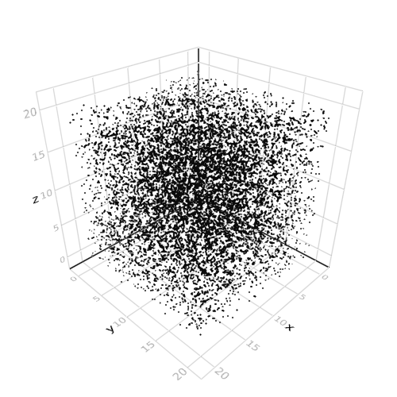

meshscatter
Orthographic Camera
Tags: 3d, cameracontrols, meshscatter, update_cam.
using Makie
using GeometryTypes
x = Vec3f0(0); baselen = 0.2f0; dirlen = 1f0
# create an array of differently colored boxes in the direction of the 3 axes
rectangles = [
(FRect3D(Vec3f0(x), Vec3f0(dirlen, baselen, baselen)), RGBAf0(1,0,0,1)),
(FRect3D(Vec3f0(x), Vec3f0(baselen, dirlen, baselen)), RGBAf0(0,1,0,1)),
(FRect3D(Vec3f0(x), Vec3f0(baselen, baselen, dirlen)), RGBAf0(0,0,1,1))
]
meshes = map(GLNormalMesh, rectangles)
scene = mesh(merge(meshes))
display(scene)
cam = Makie.cameracontrols(scene)
dir = scene.limits[].widths ./ 2.
dir_scaled = Vec3f0(
dir[1] * scene.transformation.scale[][1],
0.0,
dir[3] * scene.transformation.scale[][2],
)
cam.upvector[] = (0.0, 0.0, 1.0)
cam.lookat[] = scene.limits[].origin + dir_scaled
cam.eyeposition[] = (cam.lookat[][1], cam.lookat[][2] + 6.3, cam.lookat[][3])
cam.projectiontype[] = AbstractPlotting.Orthographic
update_cam!(scene, cam)
# stop scene display from centering, which would overwrite the camera paramter we just set
scene.center = false
scene

Meshscatter Function
Tags: 3d, meshscatter.
using Makie
using GeometryTypes
large_sphere = Sphere(Point3f0(0), 1f0)
positions = decompose(Point3f0, large_sphere)
colS = [RGBAf0(rand(), rand(), rand(), 1.0) for i = 1:length(positions)]
sizesS = [rand(Point3f0) .* 0.05f0 for i = 1:length(positions)]
meshscatter(positions, color = colS, markersize = sizesS)

Record Video
Tags: 3d, linesegment, meshscatter, record.
using Makie
scene = Scene()
f(t, v, s) = (sin(v + t) * s, cos(v + t) * s, (cos(v + t) + sin(v)) * s)
t = Node(Base.time()) # create a life signal
limits = FRect3D(Vec3f0(-1.5, -1.5, -3), Vec3f0(3, 3, 6))
p1 = meshscatter!(scene, lift(t-> f.(t, range(0, stop = 2pi, length = 50), 1), t), markersize = 0.05)[end]
p2 = meshscatter!(scene, lift(t-> f.(t * 2.0, range(0, stop = 2pi, length = 50), 1.5), t), markersize = 0.05)[end]
lines = lift(p1[1], p2[1]) do pos1, pos2
map((a, b)-> (a, b), pos1, pos2)
end
linesegments!(scene, lines, linestyle = :dot, limits = limits)
# record a video
N = 150
record(scene, "./docs/media/record_video.mp4", 1:N) do i
push!(t, Base.time())
end
Fluctuation 3D
Tags: 3d, animated, axis, mesh, meshscatter.
using Makie
using GeometryTypes, Colors
scene = Scene()
# define points/edges
perturbfactor = 4e1
N = 3; nbfacese = 30; radius = 0.02
large_sphere = Sphere(Point3f0(0), 1f0)
positions = decompose(Point3f0, large_sphere, 30)
np = length(positions)
pts = [positions[k][l] for k = 1:length(positions), l = 1:3]
pts = vcat(pts, 1.1 .* pts + randn(size(pts)) / perturbfactor) # light position influence ?
edges = hcat(collect(1:np), collect(1:np) .+ np)
ne = size(edges, 1); np = size(pts, 1)
# define markers meshes
meshC = GLNormalMesh(
Makie.Cylinder{3, Float32}(
Point3f0(0., 0., 0.),
Point3f0(0., 0, 1.),
Float32(1)
), nbfacese
)
meshS = GLNormalMesh(large_sphere, 20)
# define colors, markersizes and rotations
pG = [Point3f0(pts[k, 1], pts[k, 2], pts[k, 3]) for k = 1:np]
lengthsC = sqrt.(sum((pts[edges[:,1], :] .- pts[edges[:, 2], :]) .^ 2, dims = 2))
sizesC = [Vec3f0(radius, radius, lengthsC[i]) for i = 1:ne]
sizesC = [Vec3f0(1., 1., 1.) for i = 1:ne]
colorsp = [RGBA{Float32}(rand(), rand(), rand(), 1.) for i = 1:np]
colorsC = [(colorsp[edges[i, 1]] .+ colorsp[edges[i, 2]]) / 2.0 for i = 1:ne]
sizesC = [Vec3f0(radius, radius, lengthsC[i]) for i = 1:ne]
Qlist = zeros(ne, 4)
for k = 1:ne
ct = GeometryTypes.Cylinder{3, Float32}(
Point3f0(pts[edges[k, 1], 1], pts[edges[k, 1], 2], pts[edges[k, 1], 3]),
Point3f0(pts[edges[k, 2], 1], pts[edges[k, 2], 2], pts[edges[k, 2], 3]),
Float32(1)
)
Q = GeometryTypes.rotation(ct)
r = 0.5 * sqrt(1 .+ Q[1, 1] .+ Q[2, 2] .+ Q[3, 3]); Qlist[k, 4] = r
Qlist[k, 1] = (Q[3, 2] .- Q[2, 3]) / (4 .* r)
Qlist[k, 2] = (Q[1, 3] .- Q[3, 1]) / (4 .* r)
Qlist[k, 3] = (Q[2, 1] .- Q[1, 2]) / (4 .* r)
end
rotationsC = [Vec4f0(Qlist[i, 1], Qlist[i, 2], Qlist[i, 3], Qlist[i, 4]) for i = 1:ne]
# plot
hm = meshscatter!(
scene, pG[edges[:, 1]],
color = colorsC, marker = meshC,
markersize = sizesC, rotations = rotationsC,
)
hp = meshscatter!(
scene, pG,
color = colorsp, marker = meshS, markersize = radius,
)

Simple meshscatter
Tags: 3d, meshscatter.
using Makie
large_sphere = Sphere(Point3f0(0), 1f0)
positions = decompose(Point3f0, large_sphere)
meshscatter(positions, color = RGBAf0(0.9, 0.2, 0.4, 1), markersize = 0.05)

Explicit frame rendering
Tags: 3d, meshscatter, opengl, render_frame.
using Makie
using ModernGL, Makie
using GLFW
Makie.GLMakie.opengl_renderloop[] = (screen) -> nothing
function update_loop(m, buff, screen)
for i = 1:20
GLFW.PollEvents()
buff .= rand.(Point3f0) .* 20f0
m[1] = buff
Makie.GLMakie.render_frame(screen)
GLFW.SwapBuffers(Makie.GLMakie.to_native(screen))
glFinish()
end
end
scene = meshscatter(rand(Point3f0, 10^4) .* 20f0)
display(scene)
meshplot = scene[end]
buff = rand(Point3f0, 10^4) .* 20f0;
screen = Makie.GLMakie.global_gl_screen();
@time update_loop(meshplot, buff, screen)
Makie.GLMakie.opengl_renderloop[] = Makie.GLMakie.renderloop # restore previous loop
# when done:
Makie.GLMakie.destroy!(screen)
scene

GUI for exploring Lorenz equation
Tags: colorswatch, hbox, interaction, meshscatter, record_events, slider, textslider, vbox.
using Makie
using Colors, Makie
using AbstractPlotting: textslider, colorswatch
s1, a = textslider(0f0:50f0, "a", start = 13)
s2, b = textslider(-20f0:20f0, "b", start = 10)
s3, c = textslider(0f0:20f0, "c", start = 2)
s4, d = textslider(range(0.0, stop = 0.02, length = 100), "d", start = 0.01)
s5, scales = textslider(range(0.01, stop = 0.5, length = 100), "scale", start = 0.1)
s6, colorsw, pop = colorswatch()
function lorenz(t0, a, b, c, h)
Point3f0(
t0[1] + h * a * (t0[2] - t0[1]),
t0[2] + h * (t0[1] * (b - t0[3]) - t0[2]),
t0[3] + h * (t0[1] * t0[2] - c * t0[3]),
)
end
# step through the `time`
function lorenz(array::Vector, a = 5.0 ,b = 2.0, c = 6.0, d = 0.01)
t0 = Point3f0(0.1, 0, 0)
for i = eachindex(array)
t0 = lorenz(t0, a,b,c,d)
array[i] = t0
end
array
end
n1, n2 = 18, 30
N = n1*n2
args_n = (a, b, c, d)
v0 = lorenz(zeros(Point3f0, N), to_value.(args_n)...)
positions = lift(lorenz, Node(v0), args_n...)
rotations = lift(diff, positions)
rotations = lift(x-> push!(x, x[end]), rotations)
mesh_scene = meshscatter(
positions,
markersize = scales, rotation = rotations,
intensity = collect(range(0f0, stop = 1f0, length = length(positions[]))),
color = colorsw
)
parent = Scene(resolution = (1000, 800))
vbox(
hbox(s1, s2, s3, s4, s5, s6),
mesh_scene, parent = parent
)
RecordEvents(parent, "./docs/media/gui_for_exploring_lorenz_equation")
Type recipe for molecule simulation
Tags: linesegments, meshscatter, molecules, recipe.
using Makie
import AbstractPlotting: Plot, default_theme, plot!, to_value
using Makie
struct Simulation
grid::Vector{Point3f0}
end
# Probably worth having a macro for this!
function default_theme(scene::SceneLike, ::Type{<: Plot(Simulation)})
Theme(
advance = 0,
molecule_sizes = [0.08, 0.04, 0.04],
molecule_colors = [:maroon, :deepskyblue2, :deepskyblue2]
)
end
# The recipe! - will get called for plot(!)(x::SimulationResult)
function AbstractPlotting.plot!(p::Plot(Simulation))
sim = to_value(p[1]) # first argument is the SimulationResult
# when advance changes, get new positions from the simulation
mpos = lift(p[:advance]) do i
sim.grid .+ rand(Point3f0, length(sim.grid)) .* 0.01f0
end
# size shouldn't change, so we might as well get the value instead of signal
pos = to_value(mpos)
N = length(pos)
sizes = lift(p[:molecule_sizes]) do s
repeat(s, outer = N ÷ 3)
end
sizes = lift(p[:molecule_sizes]) do s
repeat(s, outer = N ÷ 3)
end
colors = lift(p[:molecule_colors]) do c
repeat(c, outer = N ÷ 3)
end
scene = meshscatter!(p, mpos, markersize = sizes, color = colors)
indices = Int[]
for i in 1:3:N
push!(indices, i, i + 1, i, i + 2)
end
meshplot = p.plots[end] # meshplot is the last plot we added to p
# meshplot[1] -> the positions (first argument) converted to points, so
# we don't do the conversion 2 times for linesegments!
linesegments!(p, lift(x-> view(x, indices), meshplot[1]))
end
# To write out a video of the whole simulation
n = 5
r = range(-1, stop = 1, length = n)
grid = Point3f0.(r, reshape(r, (1, n, 1)), reshape(r, (1, 1, n)))
molecules = map(1:(n^3) * 3) do i
i3 = ((i - 1) ÷ 3) + 1
xy = 0.1; z = 0.08
i % 3 == 1 && return grid[i3]
i % 3 == 2 && return grid[i3] + Point3f0(xy, xy, z)
i % 3 == 0 && return grid[i3] + Point3f0(-xy, xy, z)
end
result = Simulation(molecules)
scene = plot(result)
N = 100
record(scene, "./docs/media/type_recipe_for_molecule_simulation.mp4", 1:N) do i
scene[end][:advance] = i
end